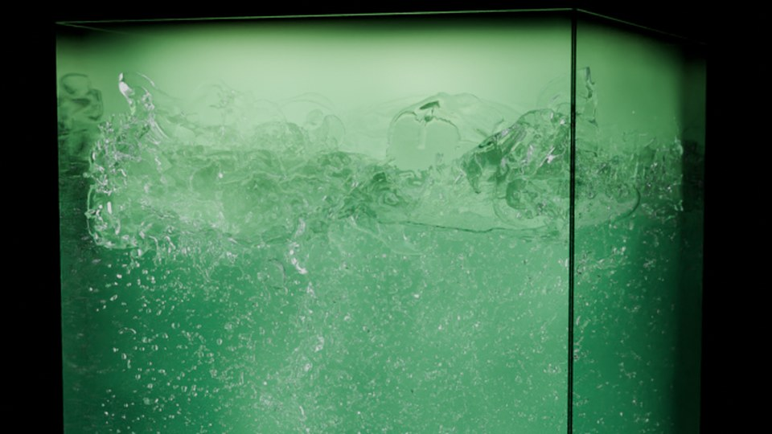
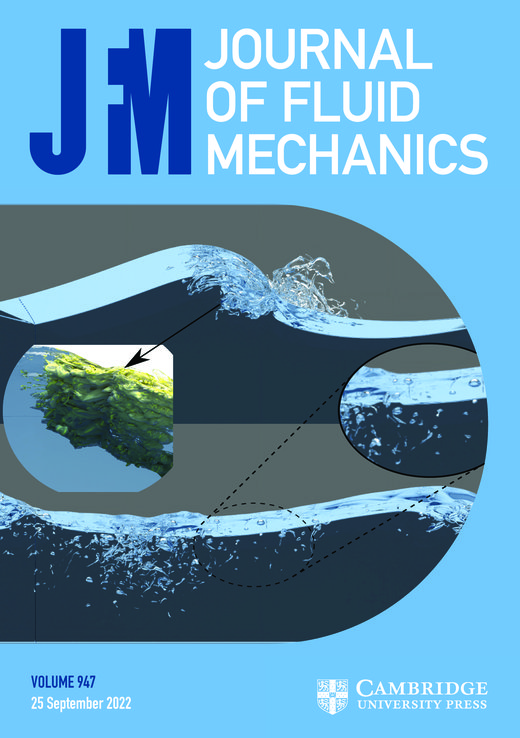

Direct Numerical Simulation of Multiphase Turbulent Flows
Istituto di Ingegneria del Mare — Consiglio Nazionale delle Ricerche
I develop and use high-fidelity CFD solvers to study the turbulent dynamics of air-water interfaces, from ocean gas exchange to naval drag reduction.
DNS of breaking surface waves: turbulence generation, air entrainment, void fraction, and energy dissipation across spilling and plunging regimes.
Turbulence-driven transfer of CO₂ and O₂ across a deformable air-water interface. Quantifying wave, bubble, and Schmidt-number contributions.
DNS of bubble-laden turbulent channel flow for naval drag reduction. Resolving bubble-turbulence interaction across a Re–Fr–We parameter space.
Mass transfer in turbulent channel flow laden with deformable droplets. Coupling between interfacial dynamics and scalar transport across phase boundaries. In collaboration with the group of Alfredo Soldati (TU Wien).

DNS of homogeneous isotropic turbulence sustained beneath a deformable free surface, with a dispersed gas phase mimicking air entrainment: isolating the contributions of turbulence, bubbles and void fraction to the mass transfer coefficient kL. In collaboration with the group of Detlef Lohse (University of Twente).
DNS of dense bubble swarms rising in turbulent vertical channels: bubble-induced modulation of turbulence anisotropy and of heat and mass transfer beyond the Reynolds analogy. In collaboration with the groups of Jannike Solsvik (NTNU) and Shahab Mirjalili (KTH).
All simulations are performed with MINS, an in-house structured Cartesian solver (Fortran, MPI, GPU-accelerated) for DNS of high-density-ratio gas-liquid flows with VOF and phase-field interface tracking, run on EuroHPC and CINECA systems.
Entries presented at the American Physical Society, Division of Fluid Dynamics annual meetings.
Di Giorgio S., Pirozzoli S., Iafrati A. — 78th APS-DFD Meeting, Houston, 2025. DNS of bubble-laden turbulent channel flow: deformable bubbles coalescing into a stable air film yield up to 40% drag reduction.
Pirozzoli S., Di Giorgio S., Iafrati A., Zonta F., Soldati A. — 77th APS-DFD Meeting, Salt Lake City, 2024. Bubble-mediated CO₂ transfer across the air-sea interface in turbulent two-phase flow.

Procacci D., Di Giorgio S., Soldati A., Solsvik J.
Journal of Fluid Mechanics, 1035, A12
Procacci D., Arosemena A.A., Di Giorgio S., Solsvik J.
International Journal of Multiphase Flow, 195, 105505
Di Giorgio S., Zonta F., Pirozzoli S., Iafrati A., Soldati A.
Journal of Fluid Mechanics, 1036, A30
Di Giorgio S., Pirozzoli S., Iafrati A.
Geophysical Research Letters, 52(15), e2025GL114907
Di Giorgio S., Zonta F., Pirozzoli S., Iafrati A., Soldati A.
Physical Review Fluids, 10(11), 110506
Pirozzoli S., Di Giorgio S., Rossi D.
Computers & Fluids, 106768
Rossi D., Di Giorgio S., Pirozzoli S.
International Journal of Multiphase Flow, 189
Di Giorgio S., Pirozzoli S., Iafrati A.
Journal of Computational Physics, 499, 112717
Rossi D., Ubaldini D., Di Giorgio S., Pirozzoli S.
International Journal of Multiphase Flow, 167, 104505
Di Giorgio S., Pirozzoli S., Iafrati A.
Journal of Fluid Mechanics, 947, A44 Cover Article
Di Giorgio S., Pirozzoli S., Leonardi S., Orlandi P.
International Journal of Heat and Fluid Flow, 86, 108663
Pirozzoli S., Di Giorgio S., Iafrati A.
Computers & Fluids, 189, 73–81
Di Giorgio S., Quagliarella D., Pezzella G., Pirozzoli S.
Aerospace Science and Technology, 84, 339–347
I am a Research Scientist at the Istituto di Ingegneria del Mare (CNR-INM) in Rome, where I run an independent research program on computational multiphase fluid mechanics with environmental and naval applications: ocean wave breaking, air-sea gas exchange, bubble dynamics and air lubrication for ship drag reduction.
I completed my PhD in Aeronautics and Space Engineering in 2021 at Sapienza University of Rome, advised by Sergio Pirozzoli and Alessandro Iafrati, developing a gas-liquid DNS solver for atomization. In 2023–2024 I was a Visiting Researcher at TU Wien with Alfredo Soldati's group, working on gas species transfer across deformable interfaces; I keep active collaborations with TU Wien, Newcastle University and NTNU.
I am Principal Investigator of EuroHPC and ISCRA computing grants totalling ~15.8 million CPU-hours and 869k node-hours (~22.5 million CPU-hours including Co-PI awards), and I contribute to the Horizon Europe RETROFIT-55 project. I develop MINS, an in-house structured Cartesian solver (Fortran/MPI, GPU-accelerated) for DNS of high-density-ratio gas-liquid flows, and co-advise PhD and MSc students at Sapienza, NTNU and TU Wien.